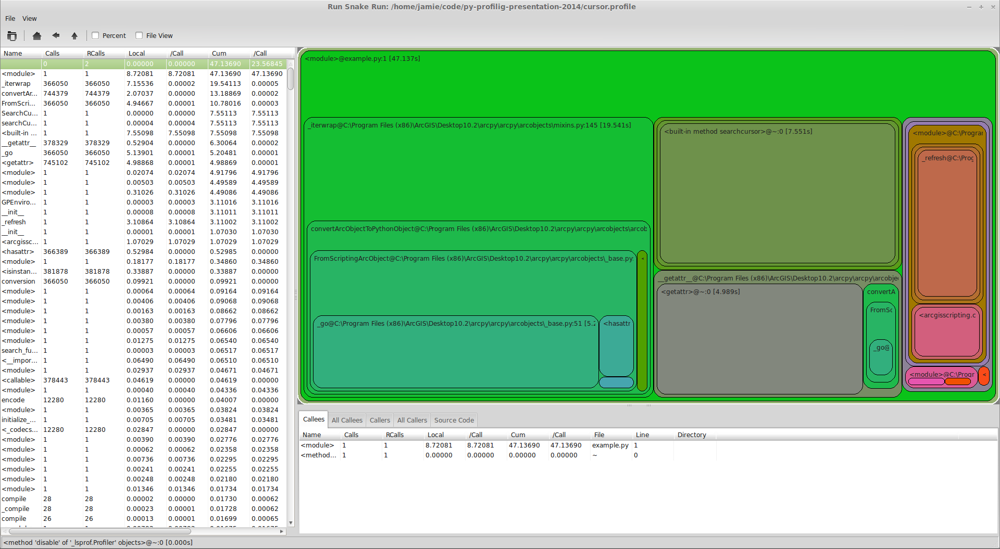
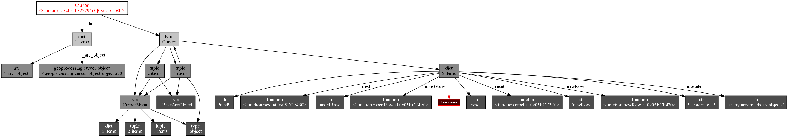
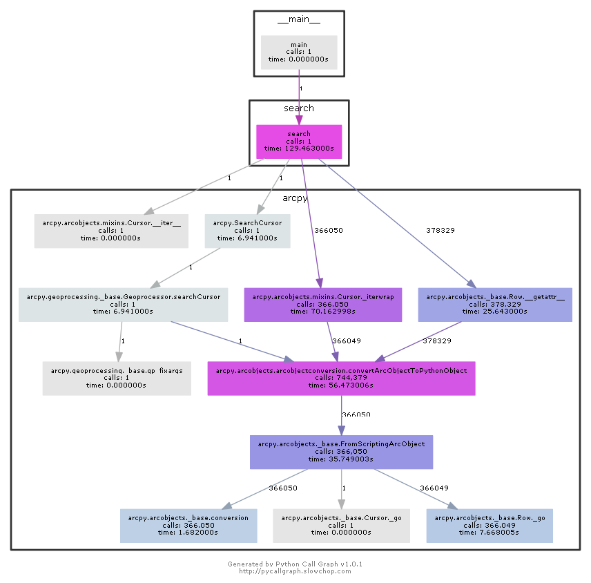

Profiling Python
By Jamie Phillips, GISi
“You don’t have a performance problem. You have a visibility problem.” - Ryan Smith
What is profiling?
Batteries included
timeit
$ python -m timeit '";".join(str(n) for n in range(100))'
10000 loops, best of 3: 23 usec per loop
$ python -m timeit '";".join(str(n) for n in xrange(100))'
10000 loops, best of 3: 21.5 usec per loop
Our Example
rows = arcpy.SearchCursor("C:/temp/address_point.shp",
"", "", "STREET_NAM", "STREET_NAM A")
current_street = ""
for row in rows:
if current_street != row.STREET_NAM:
current_street = row.STREET_NAM
print(current_street)
cProfile
$ python -m cProfile -o cursor.profile example.py
pstats
$ python -m pstats cursor.profile
Welcome to the profile statistics browser.
cursor.profile% strip
cursor.profile% sort time
cursor.profile% stats 10
Sat Mar 8 21:44:32 2014 cursor.profile
4520866 function calls (4519449 primitive calls) in 47.136 seconds
Ordered by: internal time
List reduced from 903 to 10 due to restriction <10>
ncalls tottime percall cumtime percall filename:lineno(function)
1 8.721 8.721 47.137 47.137 example.py:1()
1 7.551 7.551 7.551 7.551 {built-in method searchcursor}
366050 7.155 0.000 19.541 0.000 C:\Program Files (x86)\ArcGIS\Desktop10.2\arcpy\arcpy\arcobjects\mixins.py:145(_iterwrap)
366050 5.139 0.000 5.205 0.000 C:\Program Files (x86)\ArcGIS\Desktop10.2\arcpy\arcpy\arcobjects\_base.py:51(_go)
745102 4.989 0.000 4.989 0.000 {getattr}
366050 4.947 0.000 10.780 0.000 C:\Program Files (x86)\ArcGIS\Desktop10.2\arcpy\arcpy\arcobjects\_base.py:100(FromScriptingArcObject)
1 3.109 3.109 3.110 3.110 C:\Program Files (x86)\ArcGIS\Desktop10.2\arcpy\arcpy\geoprocessing\_base.py:546(_refresh)
744379 2.070 0.000 13.189 0.000 C:\Program Files (x86)\ArcGIS\Desktop10.2\arcpy\arcpy\arcobjects\arcobjectconversion.py:68(convertArcObjectToPythonObject)
1 1.070 1.070 1.070 1.070 {arcgisscripting.create}
366389 0.530 0.000 0.530 0.000 {hasattr}
cursor.profile%
Others tools
RunSnakeRun
memory_profiler
$ python -m memory_profiler example-mem.py > memory-usage.txt
Filename: example-mem.py
Line # Mem usage Increment Line Contents
================================================
3 120.102 MiB 0.000 MiB @profile
4 def search():
5 129.109 MiB 9.008 MiB rows = arcpy.SearchCursor("C:/temp/address_point.shp", "", "", "STREET_NAM", "STREET_NAM A")
6
7 129.109 MiB 0.000 MiB current_street = ""
8
9 129.520 MiB 0.410 MiB for row in rows:
10 129.520 MiB 0.000 MiB if current_street != row.STREET_NAM:
11 129.508 MiB -0.012 MiB current_street = row.STREET_NAM
12 129.508 MiB 0.000 MiB print(current_street)
objgraph
import objgraph
class MemUsage(object):
def __init__(self, f):
self.f = f
def __call__(self):
print("---objects at start---")
objgraph.show_growth(limit=3)
self.f()
print("---objects at end---")
objgraph.show_growth()
With decorator just put @MemUsage on the method you want to profile.
Results
Start of Script
=====================================
function 6591 +6591
tuple 2314 +2314
wrapper_descriptor 1701 +1701
End of Script
=====================================
weakref 1188 +316
wrapper_descriptor 1705 +4
member_descriptor 227 +2
list 1036 +2
getset_descriptor 904 +1
dict 1407 +1
Object Graphs
objgraph.show_refs([rows], filename='objgraph.png')
pycallgraph
Resources
It's all on Github
@phillipsj

Image credits: Github